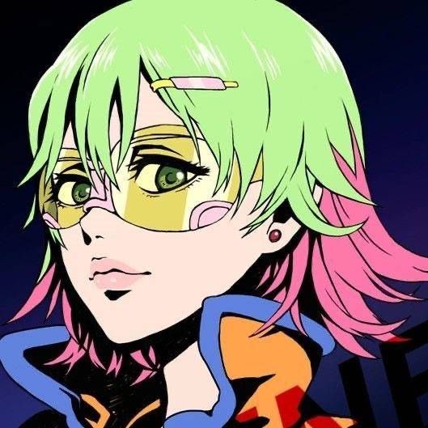

Genel Bilgiler
Tam Adı: Sonoshee McLaren
Seri: Redline
İlk Görünüş: Redline (2009)
Cinsiyet: Kadın
Durumu: Hayatta
Fiziksel Özellikler
Yaşı: 20’lerin ortası
Boyu: 170 cm civarı
Saç Rengi: Kızıl
Göz Rengi: Yeşil
Ayırt Edici Özellikleri:
Güçlü ve atletik yapısı, karizmatik tavırları ve yarış pistindeki özgüveniyle tanınır.
Kimlik Bilgileri
Doğum Yeri: Bilinmiyor
Bağlı Olduğu Grup: Profesyonel yarışçılar
Ülkesi: Redline evreni
Araç: Yüksek teknolojiye sahip yarış arabası
Aile ve Yakın Çevresi
Yakın Bağı: JP (rakibi ve aşkı)
Destek Ekibi: Yarışlarda yanında olan profesyonel takım

Sonoshee
Yarış Bilgileri
Mesleği: Yarışçı
Uzmanlık Alanları: Araç kontrolü, hız, stratejik yarış taktikleri
Özel Özellik: Profesyonel yarış deneyimi ve güçlü rekabetçi ruhu
Kişilik Özellikleri
Karizmatik, özgüvenli, tutkulu, rekabetçi, cesur, aynı zamanda duygusal yönü güçlü. JP ile olan bağı, onun karakter gelişiminde önemli bir rol oynar.
Hedefleri
En Büyük Amacı: Redline yarışını kazanmak.
Yaşam Amacı: Hayallerini gerçekleştirmek ve JP ile birlikte özgür bir yaşam sürmek.
İlişkileri
En Yakın Bağı: JP
Rakipleri: Redline’daki diğer yarışçılar
Destekçileri: Profesyonel yarış ekibi
Kişisel Bilgiler
Sevdiği Şey: Hız, yarış pistleri, özgürlük
Sevmediği Şey: Haksızlık ve kuralları çiğneyen rakipler
Hobileri: Araç geliştirme, yarış antrenmanları
Güç Seviyesi
Risk Alma: ★★★★☆
Hız: ★★★★★
Dayanıklılık: ★★★★☆
Zekâ: ★★★★☆
Yarış Yeteneği: ★★★★★
Seslendirme
Japonca Seslendirme: Yū Aoi
İngilizce Seslendirme: Michelle Ruff